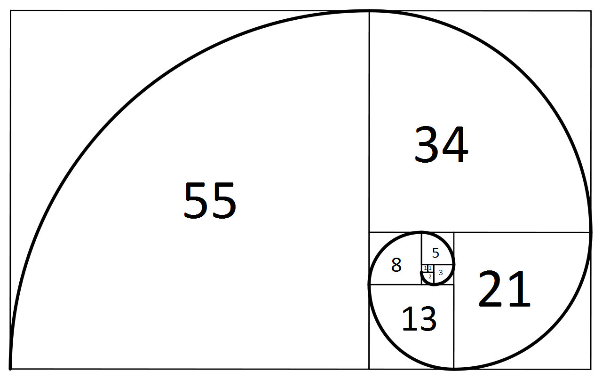
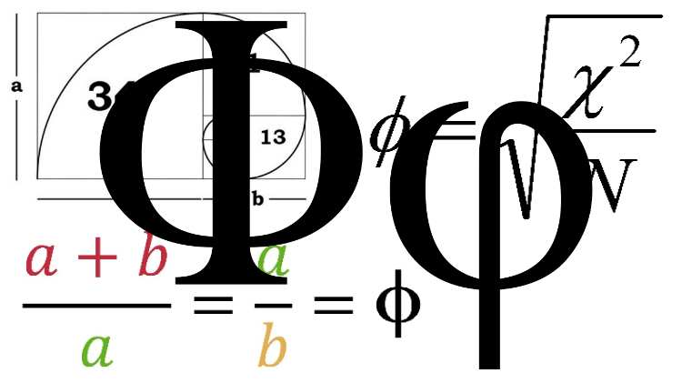
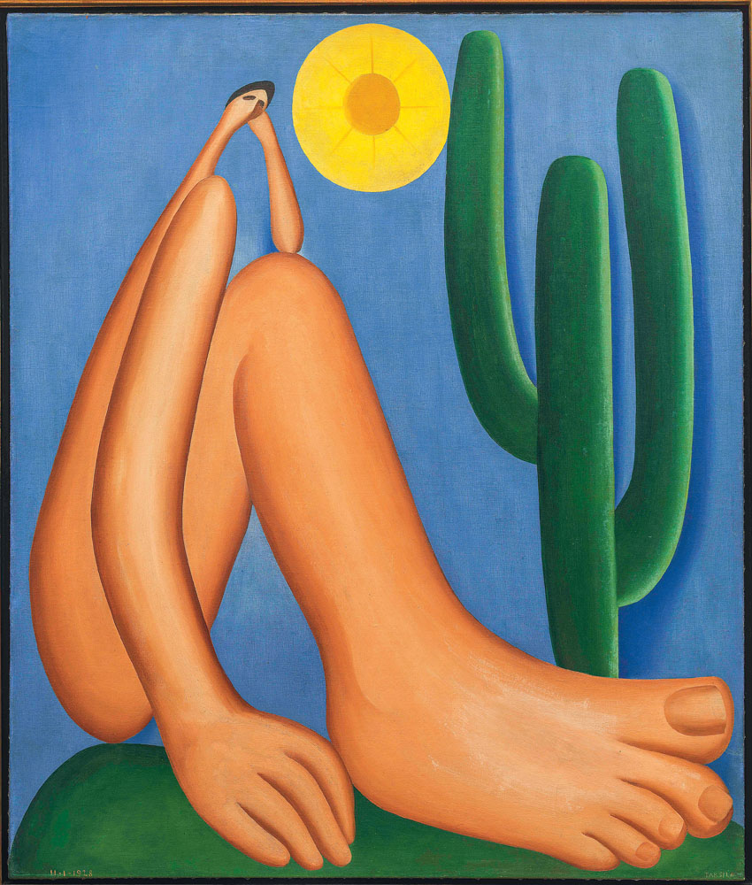
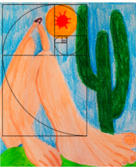
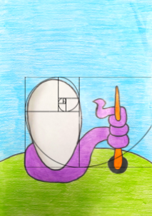
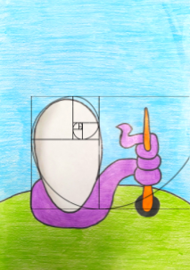

Proporção áurea
O que é sequência de Fibonacci
A sequência de Fibonacci é composta por uma sucessão de números descrita pelo famoso matemático italiano Leonardo de Pisa (1170-1250), mais conhecido como Fibonacci, no final do século 12. O matemático percebeu uma regularidade matemática a partir de um problema criado por ele mesmo. Além disso, quando esses números são transformados em quadrados e dispostos de maneira geométrica, é possível traçar uma espiral, que curiosamente também pode ser vista em muitos fenômenos naturais.
Número de ouro
Número de ouro é um número irracional, constante e real, que representa matematicamente a perfeição na natureza. Também chamado de proporção áurea, razão áurea,ou número áureo, ele é estudado desde Antiguidade, pois muitas construções gregas e obras artísticas apresentam este número como base.
Obra: Abaporu
Artista: Tarsila do Amaral
Período de produção: 1928.
 Obra: Urutu (O ovo)
Artista: Tarsila do Amaral
Período de produção: 1928
 

Referências